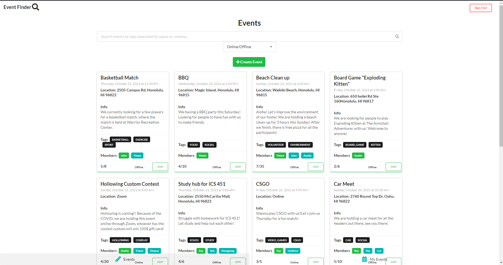
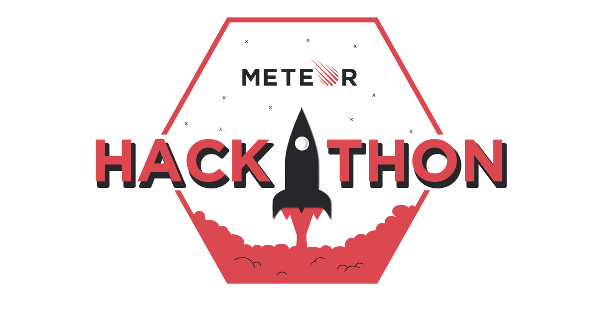
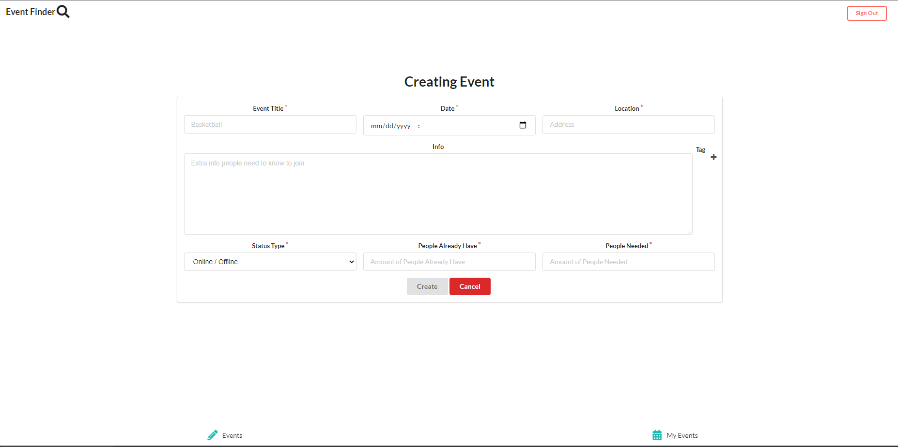

Event Finder(Meteor Hackathon 2021)

Overview
Event Finder is an application that helps people connect together even during or after the COVID crisis. After the COVID lockdowns, many people lost connection with their friends and fell into social isolation, so we need to adapt to the new environment as fast as we can, such as making new friends. Hence, we’ve built the Event Finder application. This is a Meteor application that we made for the Meteor Hackathon 2021. The main purpose of this application is to allow user to create and join events that is going on. Allowing people to go out and make friends.

What I learned from the experience
Since this is my first Hackathon, the most important skills I learn from this experience are time management and work as a team. This project tell me that working as a team can get a lot done in 5 days. This project is not the only works and things me and our team need to do, we still work load of other work from other class, so time management is very important. Help us learn to use time more wisely, putting a schedule to when to meet, when to work, and what parts each have to do.
In the beginning, I thought we can not finish the project since we only given 5 days to finish, but we still make it and able to implement over 90% of the functionality we want on the project. Even though we did not win the first third place, this experience helps me prepare for the next hackathon that I or we may go for.

What I contributed to the project and problem I encounter
In this project, I mainly work on the front end and the displaying event functionality for the project. I Created the create event form to allow user to create event and displaying it on the events page. Also, adding filter to the events page and my events page, so joined/created/full events will not be show to users. Help fix bug and cleaning up some UI. One of the bigger problem our team encounter was should or do we have time to implement the GEO location for the problem. Since we deadline is coming and it not working, but at the end we found the solution was to not implement it and use the extra time to improve on the UI and other functions.
Links
Contact Info
If have any question
Email me